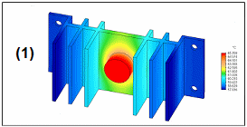
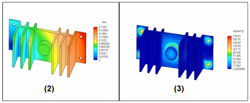
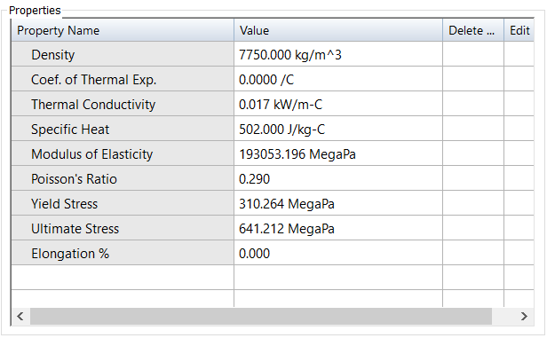

Thermal analysis
When to use thermal analysis
Thermal analysis provides answers to thermal questions related to structural design. Common thermal analysis validation includes whether any part of a design will overheat during operation; whether thermal stresses will cause a design to fail and when; and whether the material used in the design will cause excessive deformation due to heating and cooling. Thermal analysis enables you to simulate the conditions under which these problems can occur, and it provides data showing how your design will react.
You can use Solid Edge Simulation for several types of thermal analysis: linear heat transfer analysis, transient heat transfer analysis, and thermal stress analysis.
Heat transfer analysis
Heat transfer is the most frequently used type of thermal analysis, as it analyzes the effects of heat flow due to temperature changes, and the stress and deformation that the temperature changes cause. Heat flow can be caused by conduction, convection, and radiation.
Heat transfer can occur during a steady-state condition, as linear heat transfer, or over time, with transient analysis. Material properties, heat transfer coefficients, and heat flux can be temperature-dependent. Flow conditions can be set for forced convection, view factor calculations performed for radiation analysis, as well as many other factors, which help determine a system’s behavior when thermal conditions are involved.
Problems which do not involve radiation or temperature-dependent properties and boundary conditions are linear. Problems which do include these features are nonlinear.
Solid Edge Simulation provides two types of heat transfer studies:
-
For linear heat transfer analysis, choose the Steady State Heat Transfer study type on the Create Study dialog box.
-
For transient heat analysis, choose the Transient Heat Transfer study type on the Create Study dialog box.
Thermal stress analysis
Thermal stress analysis calculates stresses, strains, and displacements due to thermal effects. You can apply thermal stress analysis using coupled studies. A coupled study combines thermal analysis with structural analysis, and manages the inputs, processing, and outputs within a single study.
In Solid Edge Simulation, you can apply thermal stress analysis by selecting either of these study types in the Create Study dialog box:
-
Steady State Heat Transfer + Linear Static
-
Steady State Heat Transfer + Linear Buckling
In addition to the thermal distribution plots (1) that are generated by the steady state heat transfer processing step, a coupled study produces displacement (2) and stress (3) results caused by the temperature load. A thermal coupled study also shows the X, Y, Z, offset results of the temperature applied to the deformed model.


Heat transfer concepts
Heat transfer occurs primarily through conduction, convection, and radiation.
- Conduction
-
Conduction is the heat transfer from one body (or part of a body) at a higher temperature which is in contact with another body (or part of a body) at a lower temperature. The better the conductor, the faster the heat will transfer.
The main factors governing thermal conduction in a material are its molecular structure and temperature.
-
Good conductors include Copper, Silver, Iron, and Steel.
-
Poor Conductors (Insulators) include Wood, Paper, Styrofoam, and Air.
-
- Convection
-
Convection is the up and down movement of gases and liquids caused by heat transfer. As a gas or liquid is heated, it warms, expands, and rises because it is less dense. When the gas or liquid cools, it becomes denser and falls. As the gas or liquid warms and rises, or cools and falls, it creates a convection current. Convection is the primary method by which heat moves through gases and liquids.
-
Forced convection occurs when the fluid is in motion due to an external source (for example a fan).
-
Free or natural convection occurs when the fluid is in motion due to density variations generated by temperature differences.
-
- Radiation
-
When electromagnetic waves travel through space, it is called radiation. When electromagnetic waves come in contact with an object, the waves transfer the heat to that object.
Electromagnetic waves travel through empty space, so they do not require the presence of a material or medium. The sun warms the earth through the radiation of electromagnetic waves.
All heated solids and liquids, as well as some heated gasses, emit thermal radiation.
Radiation is emitted and absorbed through changes in the energy states of atomic nuclei and electrons.
Thermal radiation is of the same nature as visible light, x-rays, and radio waves, but differs in wave length and source.
Thermal material properties
Thermal material properties considered by the NX Nastran solver during thermal analysis include thermal conductivity, density, constant pressure specific heat, dynamic viscosity, and internal heat generation. These must be defined in the Solid Edge Material Table for the material used in your design.
These are the material properties defined for Stainless Steel in the Material Table.

- Conductivity
-
Thermal conductivity is an intrinsic property of all materials and provides the proportionality constant between the flow of heat through a solid and the temperature gradient maintained across the solid (Fouriers Law). Thermal conductivity is generally a mild function of temperature, decreasing with increasing temperature for solids, and generally increasing with increasing temperature for liquids and gases. Additionally, within a solid, thermal conductivity can vary due to material orientation (anisotropy). Preferential paths for heat flow can result. NX Nastran allows for temperature-dependent and direction-dependent thermal conductivity.
- Specific Heat and Heat Capacitance
-
Specific Heat is another intrinsic material property. When multiplied by the volume and density of material, the quantity of interest is referred to as heat capacitance. Given a closed thermodynamic system, heat capacitance provides the proportionality constant between heat added or subtracted from the system, and the resultant temperature rise or fall of the system (dq=C*dt). Since heat capacitance only multiplies the time derivative of temperature in the heat conduction equation, specific heat is only relevant in the solution of transient thermal problems. Specific heat is also slightly temperature-dependent.
To make material properties temperature-dependent for a dynamic study, you must first create a temperature function using the Create Function command, and then associate the function with the appropriate material constant using the Edit Material command.